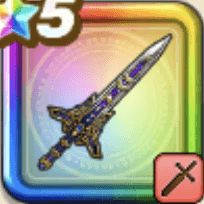

ぎんがのつるぎ
攻略班 9.5点 / 鉄甲斬超きあいためメラフォース天翔はやぶさ斬り覇王斬いきなりメラフォース世界樹の女神の加護
くわしい特徴
【レベル別習得スキル】 Lv1【バトマス】攻撃力+5 Lv1【パラディン】守備力+5 Lv5鉄甲斬（消費MP：14）敵1体に威力210%の斬撃ダメージを与え、たまに守備力を1段階下げる Lv10超きあいため（消費MP：10）限界を超えてきあいをためることで次に与える斬撃・体技ダメージが一撃だけ2.25倍になる Lv15メラフォース（消費MP：15）メラのチカラをその身に宿し、メラ耐性を上げ、一部の攻撃にメラ属性を付加する（メラ属性ダメージ+の効果は半減する） Lv20天翔はやぶさ斬り（消費MP：38）敵全体に威力240%の斬撃ダメージを2回与え、メタル系なら+24ダメージを2回与える Lv30覇王斬（消費MP：50）敵1体に威力900%の斬撃ダメージを与え、まれに直撃する（このスキルで会心の一撃が発生すると、超会心の一撃になり効果が上がる） Lv35ゾンビ系へのダメージ+5% Lv40ドラゴン系へのダメージ+5% Lv43会心率+2% Lv45【得】攻撃力+12 Lv50いきなりメラフォース（消費MP：10）戦闘開始時にメラ耐性を上げ、一部の攻撃にメラ属性を付加する。メラ属性ダメージ+の効果は半減する（効果4ターン） Lv50世界樹の女神の加護（消費MP：10）戦闘開始から致死ダメージを受けるまで、悪い状態変化とすべての状態異常をふせぎ、致死ダメージ時に1回だけ生き残る（最長5ターン） 【限界突破スキル】 1凸スキルの斬撃・体技ダメージ+7% 2凸スキルの斬撃・体技ダメージ+7% 3凸スキルの斬撃・体技ダメージ+7% 4凸スキルの斬撃・体技ダメージ+7%